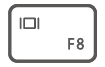

观看电影或会议演示时，将计算机连接到电视、显示器或投影仪等大屏显示设备，观看效果更佳。
- 除了计算机、扩展坞和连接设备之外，您还需要准备 HDMI 或 VGA 连接线缆。
- 在连接之前您需要检查所连接设备的端口。
- 通过扩展坞将计算机连接到电视等设备的操作步骤类似，下文以 HUAWEI MateDock 2 扩展坞为例。
- HDMI 接口和 VGA 接口不能同时使用。
- 参照图示，通过扩展坞连接计算机和电视、显示器或投影仪。
- 接通电视、显示器或投影仪的电源并打开。
- 热键模式下，按键，或者点击桌面右下角，打开投影界面，选择投影方式。
- ，只在计算机显示桌面，外接设备屏幕不显示内容。
- ，在计算机和外接设备上都显示桌面。
- ，将计算机的桌面扩展到外接设备屏幕，可以在屏幕之间移动项目。
- ，只在外接设备上显示桌面，计算机屏幕不显示内容。